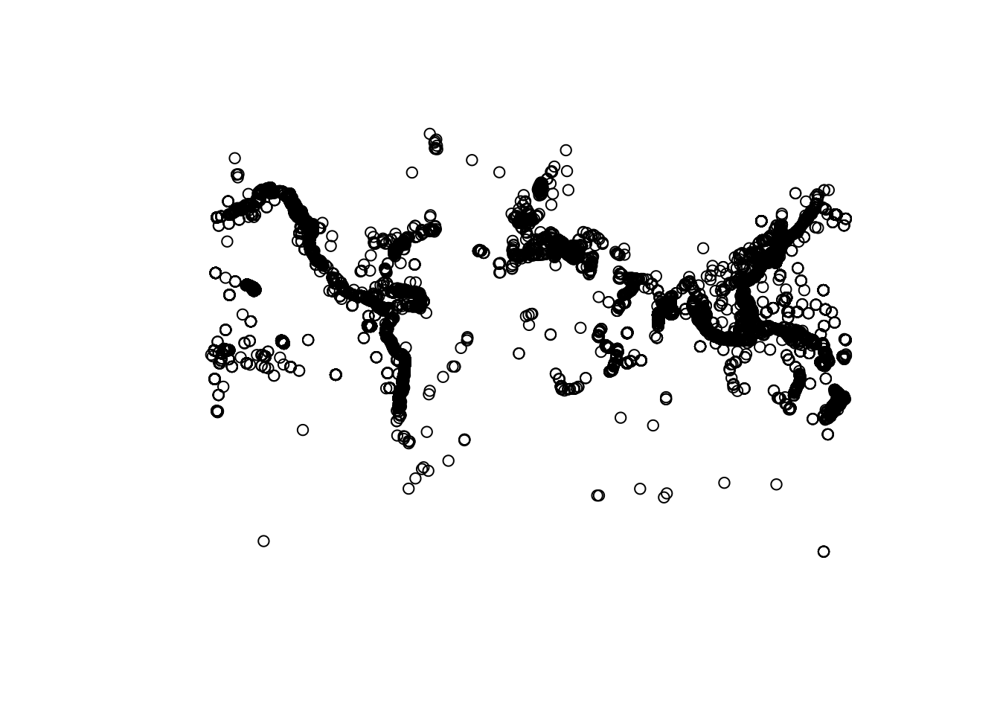
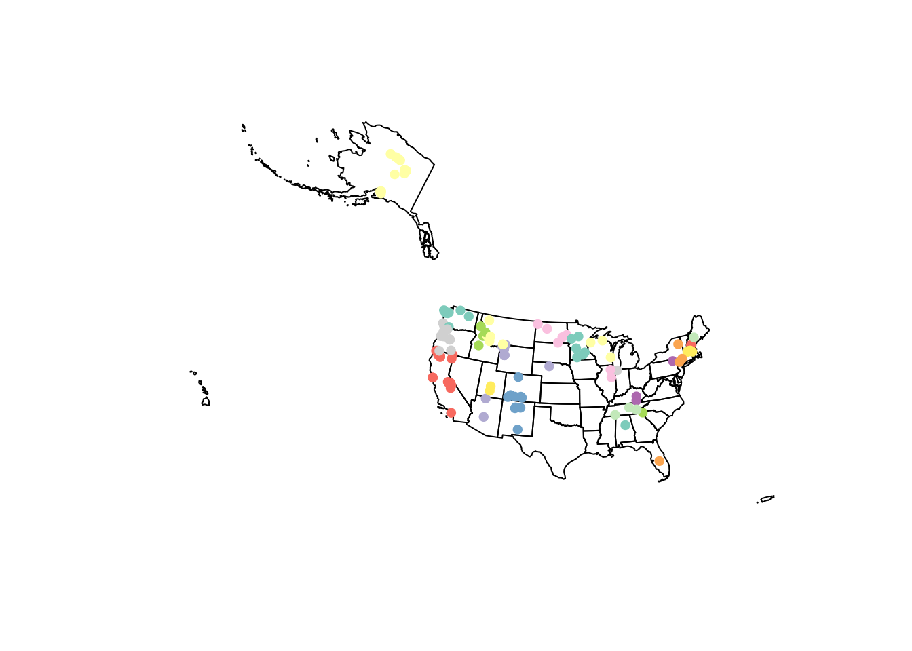
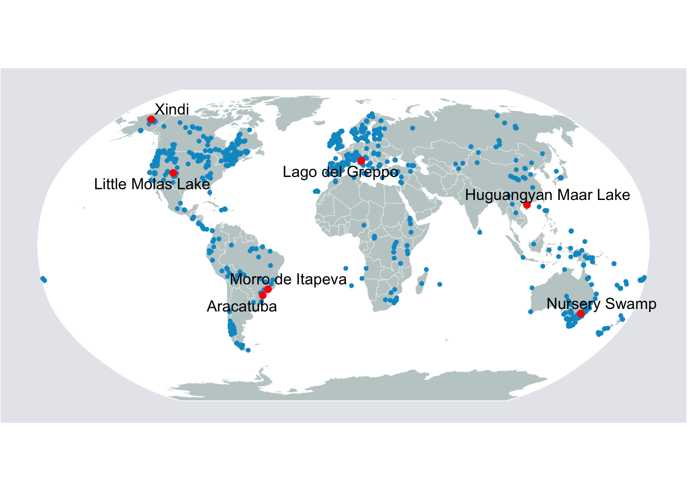

Section 7 Spatial data
Spatial data refers to any dataset that associates specific recorded values with a unique region of space. This can be latitude/longitude, state or city name, country, or any other spatial information.
In R, spatial data comes in a variety of formats. Amongst the most common are shapefiles, geodatabases, and geojson files. All of these data can be read and processed into a dataframe just like common data formats (csv, excel, etc.). However, we often have to use special libraries to do so. In addition, because of the nature of this data, spatial relationship operations can also be performed to join or create new features. Later in this tutorial, we will generate some examples using the sf and raster libraries to perform these analyses.
7.1 Importing spatial data
In this first section, we will use two libraries, ‘dplyr’ and ‘viridis’.
In general, the most common forms of geospatial data are shapefiles for vectors and tiffs for rasters. This tutorial will focus primarily on these 2 types of data and how to manipulate them.
7.1.1 Reading shapefile
The shapefile format consists of at least 3 files: the main file (.shp), the index file (.shx), and the table file (.dbf). Sometimes there is also a projection file (.prj). Please visit this webpage for more details on the distinctions and importance of each of these elements.
Because of this multi-file structure, it is good practice to save your shapefile in a folder or .zip file with its associated index file and table file. When reading the data into R, we can simply point to the .shp file in this folder and the code will know how to use the other files. In a similar way to how we read in csv files in the first page of instruction, we will use the sf() package to read the shapefile.
## Linking to GEOS 3.7.2, GDAL 2.4.2, PROJ 5.2.0## tibble [27,459 × 11] (S3: sf/tbl_df/tbl/data.frame)
## $ ID : int [1:27459] 1 2 3 4 5 6 7 8 9 10 ...
## $ TSEVENT_ID: int [1:27459] 3 9 10 10 10 10 10 11 27 27 ...
## $ YEAR : int [1:27459] -1610 -479 -426 -426 -426 -426 -426 -373 142 142 ...
## $ MONTH : int [1:27459] NA NA 6 6 6 6 6 NA NA NA ...
## $ DAY : int [1:27459] NA NA NA NA NA NA NA NA NA NA ...
## $ DATE_STRIN: chr [1:27459] "-1610/??/??" "-0479/??/??" "-0426/06/??" "-0426/06/??" ...
## $ ARR_DAY : int [1:27459] NA NA NA NA NA NA NA NA NA NA ...
## $ ARR_HOUR : int [1:27459] NA NA NA NA NA NA NA NA NA NA ...
## $ ARR_MIN : int [1:27459] NA NA NA NA NA NA NA NA NA NA ...
## $ TRAV_HOURS: int [1:27459] NA NA NA NA NA NA NA NA NA NA ...
## $ geometry :sfc_POINT of length 27459; first list element: 'XY' num [1:2] 2782987 4232038
## - attr(*, "sf_column")= chr "geometry"
## - attr(*, "agr")= Factor w/ 3 levels "constant","aggregate",..: NA NA NA NA NA NA NA NA NA NA
## ..- attr(*, "names")= chr [1:10] "ID" "TSEVENT_ID" "YEAR" "MONTH" ...When looking at the dataframe structure above, we see that the shapefile is processed similarly to how a regular dataframe is processed, except for the additional geometry field which contains the spatial information. If we want to view the data, it will show up much as a regular csv would, with rows representing observations and columns representing features.
If we want to plot this data, we can simply use the base plot function.


If you only want to plot the geometry (points):


7.2 Processing
7.2.1 Creating point data
This example shows how to convert data with latitude and longitude coordinates into a spatial dataframe. We’ll use the charcoal records from the GCD package as our field.
library(GCD)
data("paleofiresites")
df.table <- paleofiresites
wgs84crs <- 4269
sf.table <- st_as_sf(df.table, coords=c('long', 'lat'), crs=wgs84crs, remove=F)The code above helps us to access the data of charcoal records, save them into a dataframe, and use the st_as_sf() function to transform the data into a shapefile by encoding the ‘long’ and ‘lat’ columns as the coordinate pairs for each observation. We gave the argument remove=F so that the function would not then take these points out of the data, so that we can continue to see them.
By saving what was a regular dataframe as a shapefile, we can now see the difference in how plot() treats the data. Below we give two identical calls, one on the df.table object and the other on the transformed sf.table() object. What you will see is that the first call produces the usual matrix plot we expect when we ask plot() to look at multiple columns in a dataset. The second call gives us points plotted according to their geospatial coordinates. With a dataset large enough and broad enough, these data begin to resemble a global map:


7.2.2 Joining with another dataframe
Oftentimes, we want to join non-spatial data with their geographic location. For example, if we have information on energy production and consumption by state, we can join it with a spatial feature for better visualization.
To do this, we use a function called ‘inner_join’, which is one of four possible types of joining. With an inner join, we only include the points from both datafiles that overlap. If you are curious about the distinctions between different types of joins, more information can be found towards the end of the ‘Structuring’ page earlier in our collection.
# Get energy data
energy.data <- read.csv('data/energy-by_state.csv')
# Use USABoundaries library to get US spatial data
library(USAboundaries)
us.geo <- us_states(resolution='low')
joined.data <- us.geo %>% inner_join(energy.data, by=c('state_abbr'='State'))
joined.data.albers <- st_transform(joined.data, crs=5070)
# Plot the data
plot(joined.data.albers[,'Production..U.S..Share'])
7.2.3 Spatial joining
If we look at the paleofiresites data, we can see that we do not have a US state corresponding to each point location. We can create this variable with a spatial join.
# Get all paleo sites for the US
us.paleo <- paleofiresites %>% filter(country=='USA') %>%
st_as_sf(coords=c('long', 'lat'), crs=wgs84crs)
# Set data to the same coordinate system
us.paleo.albers <- st_transform(us.paleo, crs=5070)
us.geo.albers <- st_transform(us.geo, crs=5070)
# Perform a spatial join within
sp.join <- st_join(us.paleo.albers, us.geo.albers, join=st_within)
# Produce the plot
{plot(st_geometry(us.geo.albers))
plot(sp.join[, 'state_name'], add=T, pch=16)}
For more information on what you can do with a vector file in R, please visit the sf library reference or read the book Geocomputation with R.
7.3 Some Visualization Examples
Now that we have walked through how to read in, manipulate, and clean spatial data, we are going to run through a few key examples of visualization. Below we use the rnaturalearth() package, in coordination with the ggplot2() and ggrepel() libraries, to generate a few examplesm=, so that you can see the breadth of what plotting spatial data with R can accomplish.
7.3.1 Plotting charcoal data
# Get a world map from rnaturalearth library
library(rnaturalearth)
world <- ne_countries(scale='small', returnclass='sf')
# Project to robinson projection
sf.world.robin <- st_transform(world, crs='+proj=robin')
# Use imported graticule data for viz
grat <- st_geometry(read_sf('data/ne_110m_graticules_all/ne_110m_wgs84_bounding_box.shp'))
# Get data for paleo sites
paleosites <- paleofiresites %>%
mutate(site_name = trimws(as.character(site_name))) %>%
st_as_sf(coords=c('long', 'lat'), crs=4326) %>%
st_transform(crs='+proj=robin')
newCoods <- st_coordinates(paleosites)
paleosites$Lon <- newCoods[,1]
paleosites$Lat <- newCoods[,2]
# Set ggplot theme
library(ggplot2)
library(ggrepel)
ggTheme <- theme(
legend.position='none',
panel.grid.minor = element_blank(),
panel.grid.major = element_blank(),
panel.background = element_blank(),
plot.background = element_rect(fill='#e6e8ed'),
panel.border = element_blank(),
axis.line = element_blank(),
axis.text.x = element_blank(),
axis.text.y = element_blank(),
axis.ticks = element_blank(),
axis.title.x = element_blank(),
axis.title.y = element_blank(),
plot.title = element_text(size=22)
)
# Pick a few sites to be highlighted
selected.sites <- c(
'Little Molas Lake','Xindi','Laguna Oprasa','Morro de Itapeva',
'Aracatuba', 'Lago del Greppo','Nursery Swamp', 'Huguangyan Maar Lake'
)
# Complete the mapping
map <- ggplot(data=sf.world.robin) +
geom_sf(data=grat, fill='white', color='white') +
geom_sf(fill='#c1cdcd', size=.1, color='white') +
geom_point(
data=paleosites,
aes(x=Lon, y=Lat), color='#009ACD',size=1) +
geom_point(
data=paleosites %>% filter(site_name %in% selected.sites),
aes(x=Lon, y=Lat), color='#FF0000',size=2) +
geom_text_repel(
data=paleosites %>% filter(site_name %in% selected.sites),
aes(x=Lon, y=Lat, label=site_name),
color='#000000',
size=4) +
coord_sf(datum=st_crs(54030)) +
ggTheme
# Print the map
map